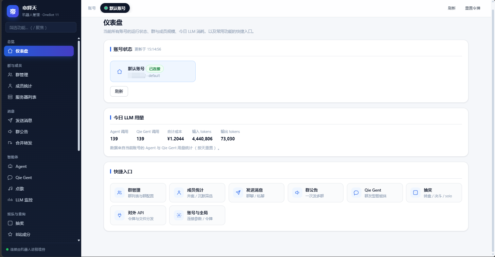
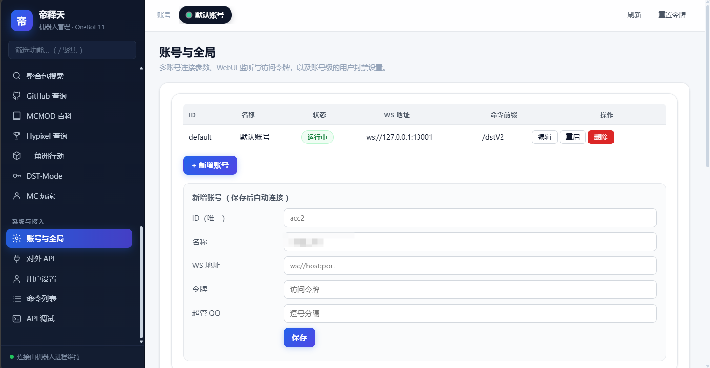
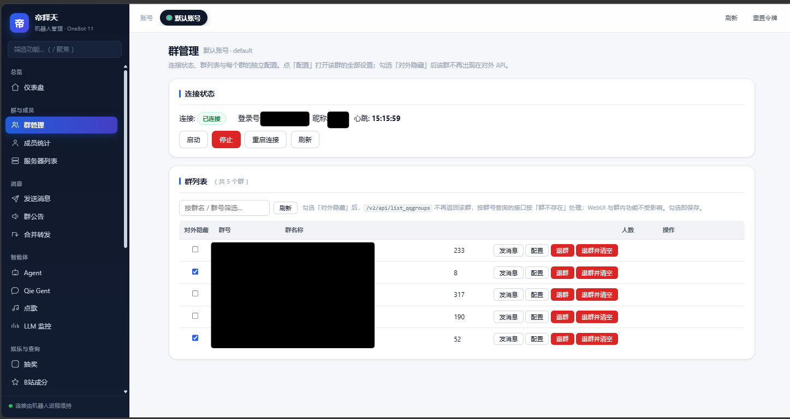
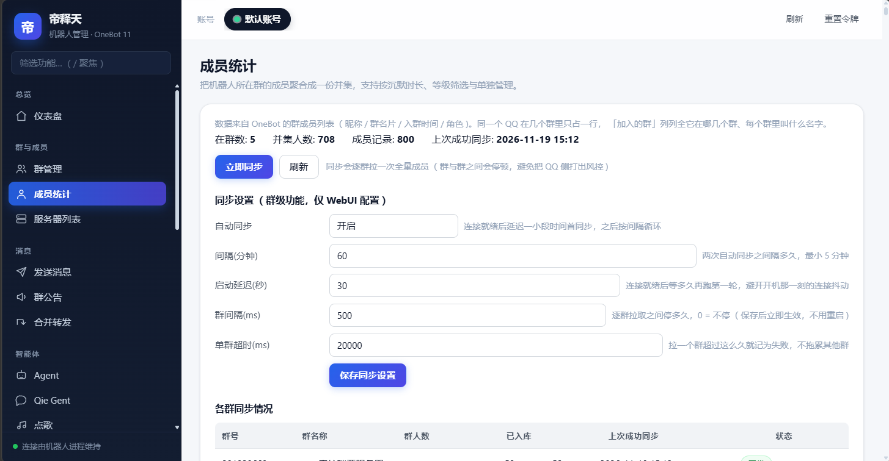
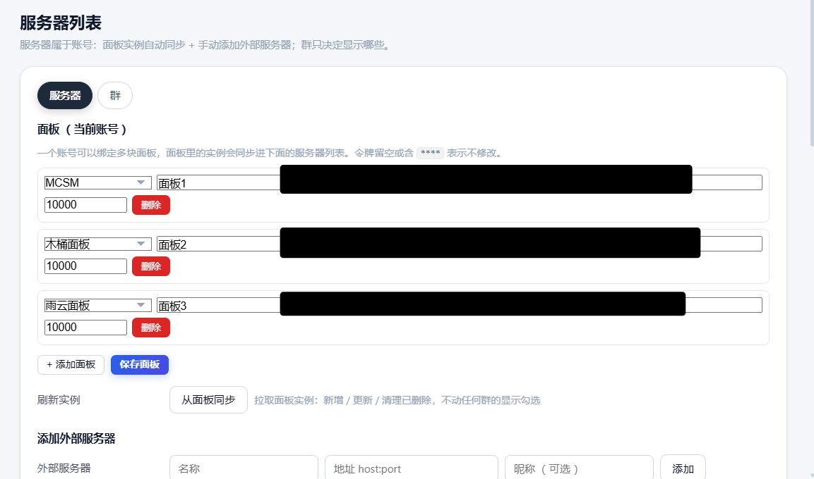
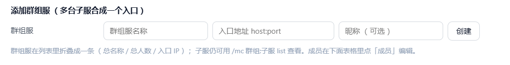
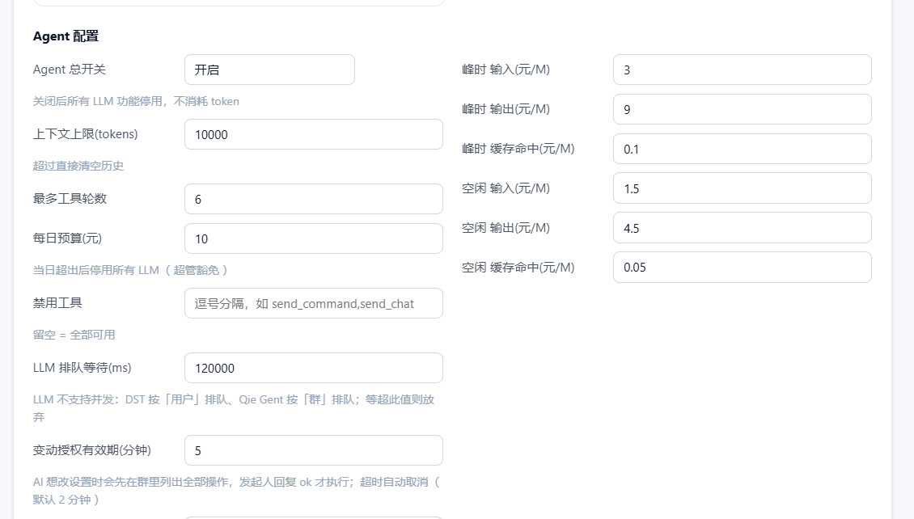
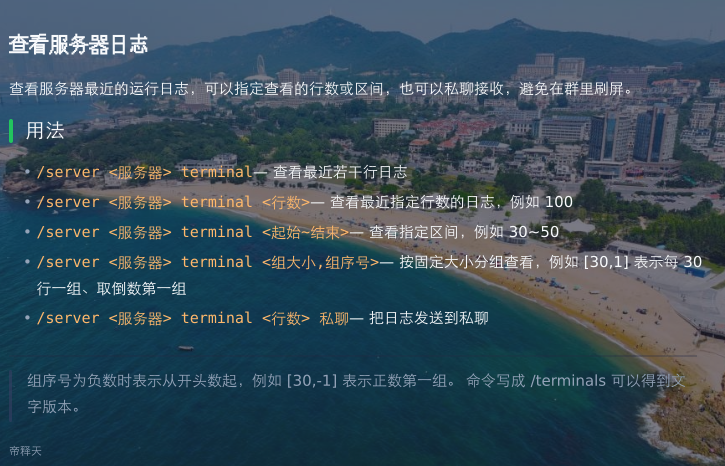
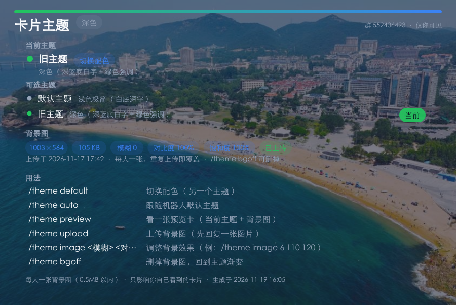
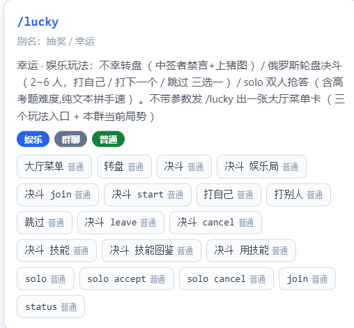

仪表盘
如图为仪表盘

是webUI的第一个页面，展示了当前运行中的机器人账号与LLM开支情况，并且对一些 常用功能进行导航
使用文档
本文档为DST QQBOT V2的官方使用文档
dst qqbot 基于onebot11协议开发。通过websocket与服务端通讯来实现功能，本身是独立的程序。建议部署在容器中运行。
bot最初开发用于MC服务器的管理和监控，在mc相关功能上较为全面。
v2是由于此bot是由于v1过于混乱难以管理，进行的二次开发。v2在代码的健康度略好，但到目前为止也比较混乱。
bot尚未开源，因为对代码的整理脱敏工程量较大。
正确启动的详情查看github仓库(在开源之后)
在正确启动之后，后端会监听3001端口(非回环)，于此部署webUI
机器人在启动时会输出webUI token
使用正确的令牌即可进入管理面板
管理面板的UI比较杂乱，但是在功能上较为齐全。
随后，需准备onebot11协议的websocket服务端信息
也即 ws地址，令牌
在侧边栏的系统与接入

中即可添加机器人账号，
同时在这里可以完成机器人的超管账号设置。
不过，多个机器人账号并没有进行过测试，无法保证多账号下的运行状况
另外，机器人在加入群聊后务必由群管及以上输入/startbot或者/启用才能唤醒机器人
至此，一切正常的话，机器人服务就可以正常运行了
如图为仪表盘

是webUI的第一个页面，展示了当前运行中的机器人账号与LLM开支情况，并且对一些 常用功能进行导航
如图为群管理

这是webUI中最为常用但也最为冗余的功能，不大不小的功能全部被堆在这里进行配置
对外隐藏 勾选对外隐藏之后群聊将不会出现在对外API接口中。返回群聊列表的API将忽略这些群聊
发消息 自动跳转到发消息页面并填入群号
群配置 基本功能都有介绍，太过复杂，自行查看。
成员统计展示了机器人加入的群聊中所有成员的信息，并提供了基本的数据分析能力

你可以查看这些群聊的并集成员，去除群聊中重复的部分
也可以单独对各个群聊的成员进行统计
根据其活跃度，等级进行排序。
不要忘记，在群成员列表下面有总的成员列表。
如果机器人有相关群聊的权限，也可以直接踢掉群成员。
在这里，管理员可以为bot添加其所管理的服务器。
目前兼容了mcsm,木桶,雨云面板。mcsm是兼容性最好的，你只需要提供mcsm的链接与其API令牌即可接入bot.

bot会自动读取各个面板的实例，并创建为服务器对象
在bot的逻辑里，每一个服务器会作为单独对象被管理。
你可以设置这个服务器的昵称，显示ip，状态，关联的安装包，参与的群组服。
随后，在群面板中，管理其是否在这个群显示，以及在这个群被管理所需要的权限。
通过这些，可以为不同的群提供不同的服务器服务。
当然，你也可以通过添加外部服务器的方法接入自定义地址的服务器。
bot会使用listping协议获取服务器信息，但无法提供进阶功能。
对于listping协议获取的服务器，当延迟低于阈值时显示延迟，高于阈值时仅显示是否运行。
不过，这是为了避免某些时候bot由于性能压力导致的错误探测造成延迟误解。
这些设置会影响几乎所有的MC服务器相关功能
对于群组服务器，bot也提供了专门的兼容。

在这里你可以创建一个集合，并设定群组服的入口IP昵称以及其子服。
加入到群组服的子服在设定上仍然被视作是单独的服务器。但是子服通常是内网服务器，所以建议使用MCSM来接入。否则无法进行有效探测。
群组服会被当成单独的服务器渲染和对外提供。其人数是所有子服人数和。
在群面板中有着SLP协议开关，缓存时间，以及前文所说阈值大小的设置。
同时可以自定义渲染卡片的标题。
顾名思义
发送消息的升级版本，在所有加入群中发送消息
顾名思义，有一点废掉的功能，但也许有用，提供了自定义合并转发的功能。
这是一个遗留问题。早期agent不仅仅有qiegent,负责服务器管理的agent是单独分开的(dst agent)但考虑到后面的实际使用
两个agent合并了。但对agent的总管理和对qiegent的子管理并没有分开

最多工具轮数 : 实际生效的应该是qiegent那里的工具轮数，无法确定其目前作用，不过无论如何建议设置的高一点。否则AI很容易干一半死掉。
每日预算 : 这里的预算是agent的总上限，由于没有另一个agent了，所以这里的上限就承担了实际的上限
禁用工具：没用过，不一定有用
LLM排队等待 : 这个有用，但具体怎么用的已经没人知道了
变动授权有效期 : 这个指的是AI改设置功能时会等待发起者多久
价目表 : 用于计算花费
会话上下文：已废弃，因为dst agent是用户级上下文。
qiegent页面的工具说明是中文的，更易于理解
其功能很多与agent重复，如果qiegent设置没用就去设置agent的。
纯 @ 短反应: 这里指有用户@了bot但什么话没说的时候的反应，只携带图片没有正文也会触发
收到即点赞:此功能目前为总功能，这里这个开关是否有效未知。
点赞表情id:也就是对消息回应表情那里的ID.
连击封禁:避免刷屏@bot
AI 每轮最多发歌 : 避免bot发疯刷屏
监管AI:避免污染AI提示词。确保AI正常工作
顾名思义，设置/music search /music 以及 agent点歌工具的配置
在这里配置网易云 QQ音乐的令牌
QQ音乐理论有效，但设计上令牌没有做续签，三天内失效，而且QQ音乐是否还能真的调用已经无法确定。
发送方式中的私聊发送确定失效
管理LLM具体的数据包情况
实际是/lucky命令的控制台。包含了轮盘赌小游戏，不幸转盘，solo
通过aicu.cc的API获取指定uuid的所有评论，并由AI进行总结
基于GLM提供的免费图片视频生成模型。理论上兼容GLM全系列模型。
mcmod应该已经失效了。
github需要apikey，不填的话非常容易限流
curseforge 必须要apikey
hypixel也需要api key
三角洲是从kkrb.net上抓数据，无需key
DST-Mode的验证服务器设置
部署了dstmode的服务器正版验证会被路由到bot的验证服务器进行验证，此页面会记录这些路由的数据，并统计玩家信息
(都是合法数据的统计)
管理索引和变量。
索引用于指向本地文件或者URL。用于管理资源分发。
服务器列表的服务器绑定了索引后会在对外API的获取服务器列表中携带索引，便于进行自动安装整合包功能的开发。
几乎没用，如果有用户不想用公共api，忍受每日预算的限制可以用。有没有用也不清楚。
进行onebot11API的收发测试。开发者使用
设计上命令的尾部添加s即可强制以文本形式返回。但实际哪些命令兼容无法确定。
本栏目介绍需要群管及以上权限执行的命令
/llm显示今日大预言模型消耗情况
*别名 预算*
/llm reset重制今日预算
/sa超管的系列功能,目前用于管理当前群聊手动提权的用户、
如果你希望群成员可以使用bot的群管功能，但又不希望给他群管理
则可以使用/sa addadmin 手动提权
/sa removeadmin删除提权
/sa查看提权列表
/debug返回一张运行状态卡片
/fw通过JSON序列化文本生成合并转发
/startbot启用bot,机器人在进入新群聊后默认静默。必须执行此命令唤醒
/server(部分)
server本身并不是群管命令，但其部分子命令需要群管权限。
[选择器]是什么？
其指代程序如何识别到你期望的服务器。此处的选择器采用了模糊匹配服务器名称、IP、昵称来寻找你期望的服务器
/server title set\reset/server [IP] [名称] [昵称]/server [选择器] nickname set\resetxxx
/server [选择器] ip set\resetxxx
这属于已被代替的功能，目前显示列表可以直接开关，而不是使用黑名单，是否有效未测试 /server backlist add\remove [选择器]
面板接入的实例才能使用 /server [选择器] console_send xxx
/server [选择器] terminal [参数]
终端支持复杂的切割方法来查看期望的日志。具体查看如图介绍，也可以直接发送/server terminal bot会发送一张教程卡片
子命令 save / 存档
本功能用于直接控制存档，agent可用，但需要回复式鉴权
以下不在显示/server save的前缀
delblock [选择器] [维度] [x y z] 删除指定方块，回复原方块
delchunk [选择器] [维度] [x z] 确认 删除指定区块 确认两个字必须打
list [选择器] [ 维度] [x z] 列出指定区块的所有实体
kill [选择器] [ 维度] [x z] [uuid] 按照uuid删除实体
look [选择器] [ 维度] [x z] [高度] 查看刨面图，渲染图，用于寻找方块
getblock [选择器] [维度] [x y z] 读取指定坐标方块
输入/help 或者 /帮助 查看帮助卡片
theme仅群聊可用
用于管理卡片的显示效果。 完全可用。
/theme查看主题介绍卡片

/theme preview预览查看一张预览卡片
/theme <主题名>切换主题卡片
/theme upload上传上传背景为卡片设置背景图片
>> 使用upload,你需要此消息中直接插入图片，或者回复一张带图片的消息，并输入/theme upload来上传。为了机器人的安全运行。如果原图片被撤回则上传会被回退。感谢您的理解
/theme image <模糊> <对比度> <饱和度>图片背景矫正用于后处理背景图片
/theme bgoff去背景删除背景nobg删除背景图
server (部分需要群管)[选择器]是什么？
其指代程序如何识别到你期望的服务器。此处的选择器采用了模糊匹配服务器名称、IP、昵称来寻找你期望的服务器
/server list-> 也可以直接使用/list 查看一张完整的当前群聊服务器运行状态卡片
/server [选择器] list查看指定服务器的玩家列表。面板服通过发送list并截取控制台探测，外部服通过slp协议探测。这是为了避免slp可能显示的匿名玩家。
/server offlist [选择器]离线列表离线仅支持面板服e，查看此服务器所有上线过的玩家。通过直接读取存档nbt实现
/server search [mod/pack]搜索关键词 - [mod/pack] 可不填写，不填写则为综合
/server wiki此功能已失效赞不说明
/server user [正版用户名]账户档案通过mojiangAPI获取账户基本信息. /server user [正版用户名] meme 以身份证的形式渲染
/server hyp [正版用户名]hypixel获取hypixel数据
/server skin [正版用户名]皮肤获取此用户皮肤的3D渲染图
/server skin2d [正版用户名]skinraw获取此用户的原始2D皮肤
/server map [选择器] [维度] [x z] [半径]地图仅支持从面板获取的实例服，渲染指定位置的地图，通过读取地图数据实现
/server map [选择器] player [玩家名] [半径]地图上文的第二种形式，通过玩家定位
/server view [选择器] [玩家]视角查看指定玩家视角的渲染图，无平滑光照，无方块贴图
/server view [选择器] at x y z yaw pitch 维度视角高级模式，填入具体参数拍摄。建议使用agent代为完成
/server spark tps [选择器]通过发送spark tps 并解析控制台来生成spark性能参数卡片。另外，此命令有其他触发方式，但无意义，不做介绍
/server tps [选择器] neoforge tps /forge tps /debug获取服务器tps,但兼容性更强。会自动尝试使用三种方案来探测tps.在neoforge forge模式下支持分维度显示
/server debug [选择器]通过AI分析此服务器lastest.log
/server debug [选择器] list列出此服务器近10份日志
/server debug [选择器] [序号]分析指定日志
/server debug crash [选择器]与上三个一致，但目标是崩溃报告
/pingping
/qqinfo支持直接@和qq号参数
查看目标的公开信息
管理你的dstmode数据
dst无别名
/dst login [游戏名]登录手动获取登录凭据，普通用户不要使用
/dst bind [识别码] [游戏名]绑定确认一般由启动器复制给你，黏贴发送并回复ok完成绑定
/dst skin dst皮肤换肤换皮上传游戏皮肤，直接在消息内嵌入皮肤，或者回复带有皮肤文件的图片并输入skin完成上传
/dst status状态我的查看账户信息
/dst unbind解绑解绑
/vote/vote不填写参数，即为投给本轮投票的赞成。当为选择投票时，填写序号来选择。
/vote kick [选择器] [玩家名]踢出某个服务器的某个玩家
/vote member [QQ号]群成员踢成员踢出群成员 需要bot有群管理
/vote start [选择器:面板实例]开启开启实例
/vote stop [选择器:面板实例]关闭关闭实例
/vote mute [@群成员/QQ号]禁言禁言群成员
/vote list列表查看当前公投
/vote choice [分钟] [选项一] [选项二]选择.... 进行常规投票
/vote choice cancel选择取消选择投票
个人对话AI。基本没用
私聊输入/whale查看咋用
将qq绑定到应用上
/bind list列表查看已经绑定的应用
/bind unbind [序号]解绑解绑
/bind nerver拒绝一切绑定请求
/bind accept取消拒绝一切绑定请求
/df三角洲delta直接输入查看使用方法
/githubgh仓库cangku直接输入查看使用方法
/image图片图来张图直接输入查看使用方法
/ey二游ergame直接输入查看使用方法
/music search搜索音乐
/music [序号]选择音乐
输入/lucky 查看使用方法

输入/qqanlysis/群分析/群统计/qp 来分析群聊
/cam /街景 /实况调用网络摄像头获取街景